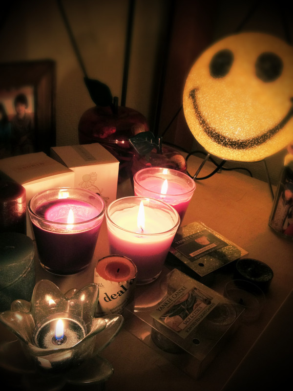

いつも読んでくださってる方、ありがとうございます*
まりかです。こんばんは~☆
コメント読みました:)
番組の感想ありがとうござます。
笑ってくれてありがとうござます。えへえへ←
ブーツは心配ないです。
そうです!きっとわんちゃんは
あのブーツを気に入ってくれたんよ!!
噛んでくれたおかげで
さらにいい味がでたと思う~!うん
.................................
＊質問にお答えするんだな!!
・姉妹はいるの？
いっこ上の兄がいます!
・ディズニーランドとシーならどっち派?
迷う!!
どっちも好きだけどなぁ~
でも高校生だし、シーがいいな^^!!←
あっ!別に背伸びしてないですよ。笑
・原宿の古着屋さんで買う??
買ったりしますよ-!!
見るだけでも楽しいけど♡
お手紙うれしいです。
楽しみにしてます!
まころん♪さん
デビュー戦頑張ってください!!!!!!=3
めっちゃ応援してます!!!
ふぁいとー！
.................................
笑顔がすてきな人!
そうですね。
基準とかないです。
その人が何も意識せずに自然と出る笑顔が
すてきなんだと思います!
私もみなさんにすてきな笑顔が
届けられますように!!
うん。ちょっかい出しちゃうのくせです><
あ-...かまってちゃんなのかな...??笑
のぎメンはみんなやさしいから
かまってくれます。ありがとう。
私服なのですが、
私はほとんどままさんからの
おさがりー‼**
昔からそうだから
ままとめっっちゃ趣味合うんですよ-!!
だからちょいと渋めのものもすき。
服装はあまり人とかぶらない^^!
自己流おしゃれって......めっちゃ褒め言葉です~!!
感動しました。←
もっと磨きます!!!!!
でも、次の私服チェックのは
ひとひねりしすぎた------------笑泣
今度メガネのアップ載せます♪
キャンドルすき*･゜ﾟ･*:.｡

明日は祝日。そして大阪で握手会がありますね*
私は出ませんが、会いに行く方は楽しんできてくださいっ^^!!
みんなも楽しんできてね~♡
大阪!!私も参加したかったよ-----
お休みの方はゆっくりくつろいでくださいね。
お仕事、学校ある方頑張って!!
ベビたん*****bA by marika